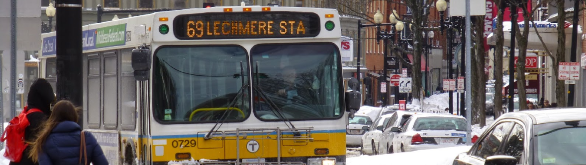

How This Came About
When I was given a project in grad school that required the collection of cyclic voltammograms, I picked up one of the few Bibles of Electrochemistry, turned to page 1, and started reading. I didn't make it that far, but after help from senior grad students and a fair amount of trial and error, I finally felt confident in my ability to design experiments, troubleshoot in real time, and explain complicated concepts to labmates using simple terms.
Towards the end of my grad school career, after mentoring a number of fellow students in the art of collecting CVs, I felt like writing up all I know so that I could leave a help manual for the group. This book started with me free writing all I knew on a google doc on my phone while riding the 69 bus up and down Cambridge Street while commuting to and from work. After 70ish pages and lots of graphics, some other obligations got in the way and I ended up putting off finishing this until well after I graduated and had a real job. Finally, I used it as an excuse to get some experience making and maintaining a website.
I could have self-published this exclusively on Amazon and charged you $20, but I just read a Cory Doctorow book, so I decided to put this out there on the internet and rely on donations. Then I read a Tim Ferris book and decided to give my readers the option to BUY MY BOOK if they so choose. Please, if I clarified something that has been baffling you, or if I helped you fix a problem you were having, consider buying me a beer, I'll grant you immortality on the Wall of Fame.
I could not have made this without the help and guidance of labmates and aquaintances. I'm extremely lucky to have been engaged in discussions and given pointers from Yogi Surandranath, Kwabena Bediako, Andrew Ullman, Cyrille Costentin, and Bob McGuire. I would also like to thank everyone who has ever asked me a question about electrochemistry, as it allowed me to practice explaining them in simple terms. None of this would have been possible without Mike Huynh, who not only provided me with hours of discussions on electrochemistry throughout our time in grad school, but gave me tips and feedback on this website, which would have looked a LOT worse without his suggestions.